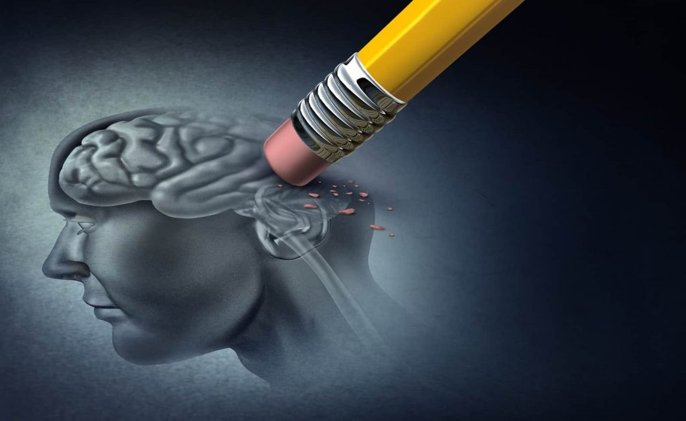

Mentális egészség
- Stresszoldás: A vízilabda remek stresszoldó hatással bír. A magnéziumban gazdag ételek, mint a mandula vagy az avokádó, segíthetnek az idegrendszer regenerálásában, csökkentve a stresszt.
- Csapatmunka és kommunikáció: A vízilabda fejleszti a szociális készségeket és a kommunikációt. Az elegendő folyadékbevitel kulcsfontosságú a mentális éberség fenntartásában, mivel a dehidratáció negatívan befolyásolhatja a koncentrációt.
- Önbizalom erősítése: A sikeres játék és fejlődés növeli az önbizalmat. A kiegyensúlyozott étrend, mely tartalmaz fehérjéket, egészséges zsírokat és szénhidrátokat, nemcsak a fizikai erőt, hanem a mentális egészséget is támogatja.
